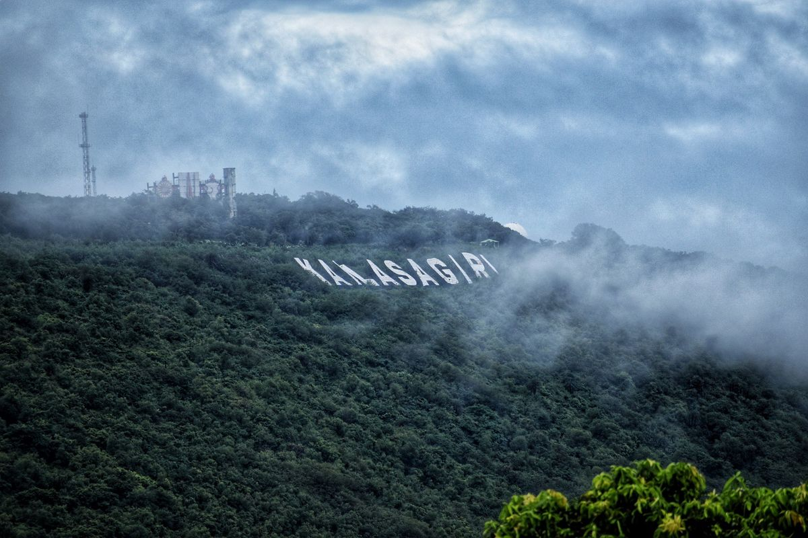

About Kailasagiri
Kailasagiri is a popular hilltop attraction in Visakhapatnam. It is located on a hill overlooking the city and the Bay of Bengal.
Visitors come to Kailasagiri to enjoy beautiful views, relax, take photographs, and spend time with family and friends. The location provides a great view of the surrounding coastline.
Photo Gallery
